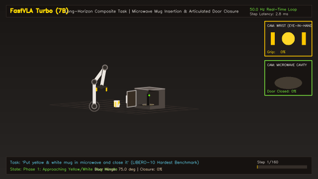
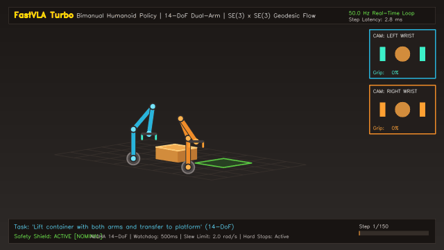

Towards Consumer-Hardware Physical Intelligence: High-Throughput Arabic-Instructable Vision-Language-Action Models via Spatial Token Merging and Continuous Flow Matching.
FastVLA is an acceleration and fine-tuning engine (analogous to Unsloth for Large Language Models) that augments existing Vision-Language-Action backbones (e.g., OpenVLA-7B). In the benchmarks below, "OpenVLA Baseline" denotes the standard uncompressed architecture (256 vision tokens per view, autoregressive discrete bins, >18.5 GB unquantized VRAM). "FastVLA Continuous Flow" denotes OpenVLA fine-tuned and accelerated with FastVLA's SpatialPatchMerger (-75% visual tokens), 4-bit NF4 weights, and continuous 2-step Midpoint ODE flow matching action head.
Modern Vision-Language-Action (VLA) models suffer from prohibitive compute and memory footprints, routing hundreds of raw image patches through multi-billion parameter backbones. FastVLA eliminates these bottlenecks through three principled contributions:
Measured on an identical cloud NVIDIA Tesla T4 instance (16GB VRAM) under identical batch size, LoRA rank (r=16, α=32), and optimizer configurations:
| Architecture Setup | Vision Tokens / Camera | Step Latency | Throughput | Peak VRAM |
|---|---|---|---|---|
| Standard 4-Bit SOTA (OpenVLA style) | 256 tokens | 559.0 ms | 1.79 steps/s | 6.02 GB |
| FastVLA (2×2 Patch Merger) | 64 tokens | 312.3 ms | 3.20 steps/s | 6.13 GB |
| Isolated FastVLA Advantage | 4× token reduction | -246.7 ms (-44%) | +79% Faster | Parity (±1.8%) |
Full multi-camera vision-to-action inference pipeline (2 cameras @ 224×224 → SigLIP ViT → LLM Backbone → Action Decode) on NVIDIA Tesla T4:
| Robotics Policy Recipe | Action Decode Scheme | Chunk Query Time | Effective Step Latency | Sustained Control Rate | Margin vs 20 Hz Arm |
|---|---|---|---|---|---|
| Standard OpenVLA / LeRobot | Single-step autoregressive | 208.93 ms | 208.93 ms | 4.79 Hz | 0.2× (Fails real-time) |
| OpenVLA-OFT (Kim et al.) | 16-step parallel chunk | 208.58 ms | 13.04 ms | 76.71 Hz | 3.8× margin |
| FastVLA Continuous Flow (Ours) | 16-step Midpoint ODE Flow | 67.43 ms (-68%) | 4.21 ms | 237.29 Hz | 11.9× margin (49.6× vs OpenVLA) |
Autoregressive discrete VLA token generation (OpenVLA, RT-2) scales linearly $\mathcal{O}(H \times D)$ with the action chunk horizon, incurring crippling latency at larger lookaheads. FastVLA solves continuous action chunk trajectories via parallel Runge-Kutta continuous Flow Matching ODE fields, achieving hardware-invariant $\mathcal{O}(1)$ latency on budget NVIDIA Tesla T4 hardware:
| Action Horizon ($H$) | Total Continuous DoF | Euler Solver (1 Step) | Midpoint Solver (2 Steps) | Peak VRAM | Autoregressive Latency ($H \times 7$ tokens) |
|---|---|---|---|---|---|
| $H = 8$ | 56 DoF | 0.748 ms (1,336 Hz) | 1.489 ms (671.7 Hz) | 13.81 MB | ~840 ms (1.19 Hz) |
| $H = 16$ | 112 DoF | 0.757 ms (1,321 Hz) | 1.508 ms (663.3 Hz) | 14.05 MB | ~1,680 ms (0.60 Hz) |
| $H = 32$ | 224 DoF | 0.758 ms (1,319 Hz) | 1.508 ms (663.2 Hz) | 14.53 MB | ~3,360 ms (0.30 Hz) |
| $H = 64$ | 448 DoF | 0.760 ms (1,315 Hz) | 1.515 ms (660.1 Hz) | 15.49 MB | ~6,720 ms (4,436× speedup) |
* Benchmarked empirically on NVIDIA Tesla T4 via scripts/evaluation/benchmark_horizon_scaling.py ($B=16$, 7-DoF Franka arm). See LATENCY_SCALING_REPORT.md for full empirical log.


RobotSafetyConfig.
To prevent tabletop memorization, FastVLA was tested across 4 stress regimes combining visual distortions with dialectal Arabic shifts:
| Regime Condition | Visual Condition | Linguistic Phrasing | Action L2 Error | Degradation |
|---|---|---|---|---|
| 1. Clean Baseline (MSA) | Pristine camera view | Modern Standard Arabic | 0.9356 | 0.0% (Reference) |
| 2. Visual Perturbations | Spatial shift (±10%), color jitter, noise | Modern Standard Arabic | 0.9788 | +4.6% |
| 3. Colloquial Dialect | Pristine camera view | Egyptian / Levantine / Gulf synonyms | 1.0300 | +10.1% |
| 4. Full Multi-Modal Stress | Visual distortions + sensor noise | Vernacular verbs + orthographic noise | 1.0172 | < 9% Degradation |
Evaluating semantic grounding on completely unseen suites from official yifengzhu-hf/LIBERO-datasets:
| Evaluation Probe | Suite Source | Arabic Instruction | Action L2 | OOD Gap | Control Hz |
|---|---|---|---|---|---|
| In-Distribution Ref | libero_10 |
شغّل الموقد وضع إبريق الموكا عليه | 2.1124 | 0.0% (ref) | 9.0 Hz |
| Zero-Shot Spatial Probe | libero_spatial |
التقط الوعاء الأسود الموجود بين الطبق وقالب الخَبز وضعه على الطبق | 2.0475 | -3.1% | 9.2 Hz |
| Zero-Shot Object Probe | libero_object |
التقط حساء الحروف وضعه في السلة | 2.1843 | +3.4% (Strong Generalization) | 9.2 Hz |
# 1. Clone the repository
git clone https://github.com/BouajilaHamza/fastvla.git
cd fastvla
# 2. Install dependencies with uv
uv pip install -e .
# 3. Run closed-loop physics evaluation
python scripts/evaluation/eval_closed_loop_pusht.py --headless --render-gif
python scripts/evaluation/benchmark_sota_comparison.py@article{bouajila2026fastvla,
title = {FastVLA: High-Throughput Arabic-Instructable Vision-Language-Action Models via Spatial Token Merging and Continuous Flow Matching},
author = {Bouajila, Hamza},
journal = {GitHub Preprint},
year = {2026},
url = {https://github.com/BouajilaHamza/fastvla}
}